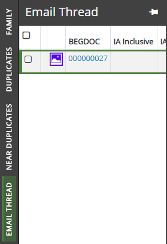

Using the Email Thread panel, email threading allows relationships among a family of emails to be identified based on its content. Email families are emails that share a common starting email; an email thread represents a single branch of an email family and determines email order within a family. Email threading can identify email families and inclusive emails for email threads. For more information, see

A combination of email headers and email body content are used to determine when emails belong to the same thread. Generally, the algorithm allows for anomalies that may occur such as timestamp differences generated by different servers. The determination of inclusiveness follows thread identification and is more exacting.
Related Topics